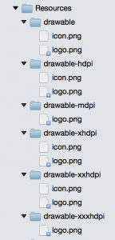
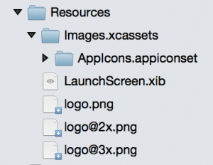

For the last four months, I’ve been working on a fast-paced Xamarin.Forms project where almost every image used has been an SVG shared between both the iOS and the Android platform apps. And it has been glorious! If an early UI design needed a few pixels shaved or added to an image we were using, no new images were needed, let alone a handful of pixel-density variations on it. It was just the few lines of code or XAML to change the rendered size. (In fact, I’ve extended our use to include stretchable buttons by adding 9-slice SVG support.) With SVGs, you use one tiny XML file to render the resulting image at any size or for any screen density.
TL;DR
- Put SVGs in a PCL as an EmbeddedResource build action
- Use an SVG control (I recommend TwinTechsForms.NControl.SvgImageView, but there are other choices.)
- Add an
SvgImageViewto your C# or XAML UI the the right assembly and resource path
Without SVG Images
Images on iOS and Android are normally managed in slightly different ways regarding naming and location. For better or worse, Xamarin.Forms continues using these image conventions, making a detour from the focus on cross-platform sharing. On a normal iOS app, you want three sizes of every image with density-based names: someimage.png, someimage@2x.png, and someimage@3x.png. On Android, you generate the different-sized images with the same name, but place them in separate drawable folders: mdpi, hdpi, xhdpi, etc.


While programs like Sketch have made generating these multiple images from a single vector file much simpler (and I’ll explain later why you will still need this), whenever you add a new one or change an existing one, that means remembering to put six or more images in their proper location. Wouldn’t it be nice if you just exported one file, put it in one location, and had that image available at any size and/or density at any time? This is where SVGs can greatly simplify things for you.
We are going to walk through using SVGs as embedded resources for this post, but you could certainly download SVGs as they are needed. Embedded resources, as the name suggests, are stored within the compiled assembly.
Bringing Your SVGs to Xamarin.Forms
To make your SVG resources easy to use in both Xamarin.Forms platform projects, we will embed them in a common portable class library (PCL). If your Xamarin.Forms app doesn’t use a PCL for code sharing, feel free to make a separate one just for SVG assets. If you are already using a PCL to share code between platform apps, you can simply put them in their own location within that library. You could also create a separate portable library for assets, depending on your organization preference.

Once you have your target PCL project, you can start to further organize them however you want. (An additional benefit over Android drawables which must be all at the same directory level.) If we’re putting the SVGs in your Xamarin.Forms shared code, it might be best just to create another directory for them; you can name it whatever you like: Resources, Images, Assets, SVGs, whatever. With a destination set up, you can start adding your SVGs to the project however you prefer.
After adding an image to your project, though, you need to remember one important step. Switch the file’s “Build action” from “None” to “EmbeddedResource” by either the Properties pad or by right-clicking it. Don’t worry. You are bound to forget to do this a few times; the SVG loading code currently throws an exception if the resource stream comes back null.
With some SVGs in place, let’s get them showing up. For this, you have a few options, each can have their own trade-offs.
Xamarin.Forms SVG Controls
One of the first Xamarin.Forms SVG controls was SvgImage from GitHub user paulpatarinski. This SvgImage control was created prior to NGraphics offering really solid SVG support, so it uses a custom fork. You may be just fine using this library, but it you are already using NGraphics for something else, you will end up with two almost-identical libraries compiled into your app. Additionally, this version can choke on some SVG elements that others can handle.
With NGraphics’ SVG support vastly improved, while working on Xamarin.Forms projects at Twin Technologies I created a custom version of SvgImage that uses the standard NGraphics NuGet package directly. This variant, TwinTechsForms.SvgImage, is available as a NuGet package. In addition to updating NGraphics, I also added 9-slice SVG support to SvgImage control. This control does not offer Windows Phone or UWP support yet.
NControl.Controls also offers an SvgImage control using NGraphics. (NControl is a Xamarin.Forms control created as a wrapper around NGraphics for custom-drawn cross-platform controls, with NControl.Controls being sample implementations.)
While it isn’t derived from the NControl SvgImage control (yet!), I have also ported the 9-slice SVG implementation found in the TwinTechsForms.SvgImage control to an NControl version: TwinTechsForms.NControl.SvgImageView (also available on NuGet). This control does not offer Windows Phone or UWP support yet.
No matter which SVG control you pick, you’ll want to add the package to both your Xamarin.Forms PCL project(s) as well as all of your platform projects. For the rest of this post, the code is based on TwinTechsForms.NControl.SvgImageView, so the exact code might be different for other SVG control libraries.
Using TwinTechsForms.NControl.SvgImageView
There is some initialization required to make SvgImageView work, but it’s a simple line in the platform projects after Xamarin.Forms initializes (AppDelegate.cs for iOS, MainActivity.cs for Android).
Xamarin.Forms.Init(); SvgImageRenderer.Init();
NOTE: without this line, SvgImageView will silently fail to use the custom renderer. I hope to eliminate the need for it at some point, but it is still needed for now.
Once we have the platform renderer Init in place, we can start putting SvgImageView in our UI code/XAML.
new SvgImageView { SvgAssembly = typeof(App).GetTypeInfo().Assembly, SvgPath = “some.embedded.resource.path.svg”, WidthRequest = 48, HeightRequest = 48, }
The SvgAssembly field might look a little unusual, but that is how we point our control to the assembly where the embedded resource is actually found. SvgPath is the string you pulled from the file’s properties.
If you are doing your SvgImageViews in XAML, which you certainly do, you will have to get your SvgAssembly from somewhere. (It may be possible in raw XAML, but my XAML skills were not up to par.)
You can see SvgImageView XAML in action in the demo repo for this blog post. In that case, I used a view model with an Assembly property to bind to SvgImageView.SvgAssembly.
Now we can start getting our SVGs rendering on the screen.
Embedded Resource SVG Gotchas
While you are experimenting with SvgImageView/SvgImage control, you are bound to hit a few mistakes. (There are some mistakes that I make almost every single time.)
Forgetting the SvgAssembly property results in a null reference exception in most controls. If you forget it, this exception will bubble up from the SvgImageView control, so it isn’t immediately obvious what went wrong. In an internal version of our SvgImageView control, we ended up setting a static DefaultSvgAssembly property so that all SVGs could be assumed to come from one location. This saved us from even bothering to add the line.
If you set the SvgPath incorrectly, you’re going to have issues at runtime as well. In some controls, it is an exception. In some, it just doesn’t render anything. It’s definitely worth checking the path you set against the value in the Properties pad for the file you want to use.
Even when you get what would be the correct embedded resource path, it is incredibly easy to forget to flag the file itself as an embedded resource. Every time you add an SVG, you need to do this before you try to render it. This error will also either be a runtime exception or result in nothing being rendered. With as many times as I’ve made this mistake, don’t ever feel bad when you go debugging an issue only to find there isn’t an SVG where you are pointing for this very reason.
Shared SVG Limitations
Remember when I said you would still need to export your images into the various density sizes? That is where one of the limitations of using SVGs comes in. Platform assets like launcher icons still require the various explicit assets because they are handled by the system before your Xamarin code can be used.
Additionally, there are some arguments for custom images when rendering an image at tiny icon sizes (or a separate SVG optimized for that purpose). Not every SVG detail will be discernible at the smallest sizes you need. This isn’t necessarily a limited of SVGs as much as complex graphics in general.
NGraphics has made some great progress toward consuming almost any SVGs I throw at it, but that could be more a symptom of the simplicity of my graphics and the use of Sketch. There are definitely SVGs that can either blow up rendering at runtime or render in unusual ways. Sometimes it is as simple as removing extra SVG non-rendering element cruft that came along from your export. If you run into an SVG that is giving you trouble, you can try exporting them from a different vector graphics application that may result in simpler paths. If you have a background with rendering SVGs, I’m sure NGraphics could use your help adding support for more elements.
Even SVG elements that do render (in some controls), don’t always render as expected. On prime example of this is the text element. If you have a text element, it likely has a typeface defined for it. There may be a way to make this work, but it might require some extra setup. So far, the easiest way to make text work is to output the SVG text as a path instead of a text element. For example, Sketch can convert text to outline paths that will work great in for SVG use.

Parting Thoughts
There are definitely limitations to using SVGs, but they can still vastly simplify your image workflow. Adding SVG support to your pre-existing app can be done without breaking any of your current image use, so it is ideal for adding to existing projects without rewriting your UI code. If you happen to give one of the TwinTechsForms NuGet packages, I’d love to hear your thoughts. Should you run into any issues, don’t hesitate to send a GitHub issue my way. Feel free to send any feedback my way on Twitter or leave a comment here. If you have any thoughts for improvements, pull requests are always welcome (or file an issue).


{kind=link}
{kind=link}
{kind=link}
{kind=link}
{kind=link}
{kind=link}
{kind=link}
{kind=link}
{kind=link}
{kind=link}
{kind=link}
{kind=link}
{kind=link}
{kind=link}